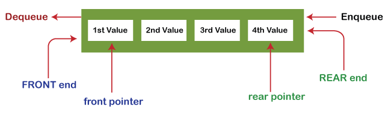

May31
A Queue is a linear structure which follows a particular order in which the operations are performed. The order is First In First Out ( FIFO ). A good example of a queue is any queue of people for anything. Whoever comes first is served first.
Some Basic Operations
Queue operations may involve initializing or defining the queue, utilizing it, and then completely erasing it from the memory. Here we shall try to understand the basic operations associated with queues −
enqueue( ) − add (store) an item to the queue.
dequeue( ) − remove (access) an item from the queue.
Few more functions are required to make the above-mentioned queue operation efficient.
peek( ) − Gets the element at the front of the queue without removing it.
isfull( ) − Checks if the queue is full.
isempty( ) − Checks if the queue is empty.
In queue, we always dequeue ( or access) data, pointed by the front pointer and while enqueuing (or storing) data in the queue we take help from the rear pointer.
peek( )
int peek()
{
return queue[front];
}isfull( )
bool isfull()
{
if(rear == MAXSIZE - 1)
return true;
else
return false;
}
isempty( )
bool isempty()
{
if(front < 0 || front > rear)
return true;
else
return false;
}
Enqueue Operations
Queues maintain two data pointers, front and rear. Therefore, its operations are comparatively more difficult to implement than that of stacks.
The following steps should be taken to enqueue (insert) data into a queue:
Sometimes, we also check to see if a queue is initialized or not, to handle any unforeseen situations.
int enqueue(int data)
if(isfull())
return 0;
rear = rear + 1;
queue[rear] = data;
return 1;
end procedure
Dequeue
Accessing data from the queue is a process of two tasks: access the data where the front is pointing and remove the data after access.
The following steps are taken to perform dequeue operation:
int dequeue()
{
if(isempty())
return 0;
int data = queue[front];
front = front + 1;
return data;
}
Complexity Analysis
The complexity of enqueue and dequeue operations in a queue using an array is O( 1 ). If you use pop( N ) in python code, then the complexity might be O( n ) depending on the position of the item to be popped.
Applications of Queues
- CPU scheduling, Disk Scheduling
- When data is transferred asynchronously between two processes.The queue is used for synchronization. For example: IO Buffers, pipes, file IO, etc
- Handling of interrupts in real-time systems.
- Call Center phone systems use Queues to hold people calling them in order.